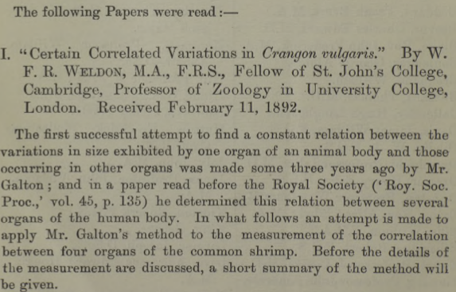
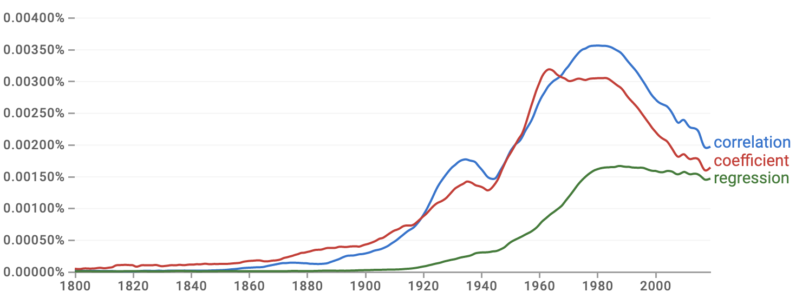
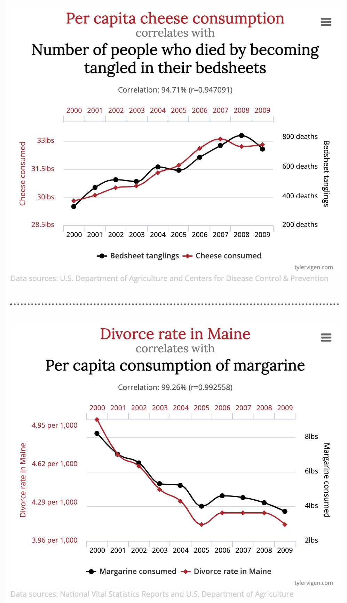
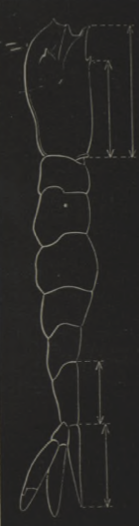
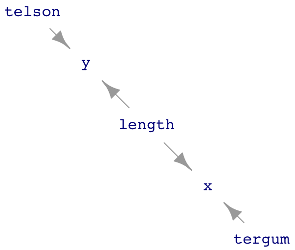
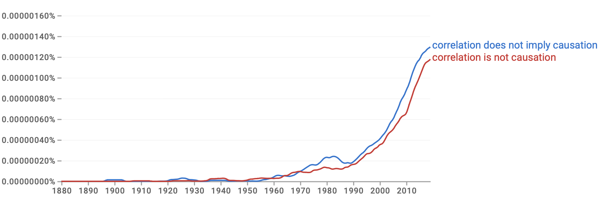

31 Spurious correlation
Google NGram provides a quick way to track word usage in books over the decades. Figure 31.1 shows the NGram for three statistical words: coefficient, correlation, and regression.

The use of “correlation” started in the mid to late 1800s, reached an early peak in the 1930s, then peaked again around 1980. “Correlation” is tracked closely by “coefficient.” This parallel track might seem evident to historians of statistics; the quantitative measure called the “correlation coefficient” was introduced by Francis Galton in 1888 and quickly became a staple of statistics textbooks.
In contrast to mainstream statistics textbooks, “correlation” barely appears in these lessons (until this chapter). There is a good reason for this. Although the correlation coefficient measures the “strength” of the relationship between two variables, it is a special case of a more general and powerful method that appears throughout these Lessons: regression modeling.
Figure 31.1 shows that “regression” got a later start than correlation. That is likely because it took 30-40 years before it was appreciated that correlation could be generalized. Furthermore, regression is more mathematically complicated than correlation, so practical use of regression relied on computing, and computers started to become available only around 1950.
Correlation
A dictionary is a starting point for understanding the use of a word. Here are four definitions of “correlation” from general-purpose dictionaries.
“A relation existing between phenomena or things or between mathematical or statistical variables which tend to vary, be associated, or occur together in a way not expected on the basis of chance alone” Source: Merriam-Webster Dictionary
“A connection between two things in which one thing changes as the other does” Source: Oxford Learner’s Dictionary
“A connection or relationship between two or more things that is not caused by chance. A positive correlation means that two things are likely to exist together; a negative correlation means that they are not.” Source: Macmillan dictionary
“A mutual relationship or connection between two or more things,” “interdependence of variable quantities.” Source: [Oxford Languages]
All four definitions use “connection” or “relation/relationship.” That is at the core of “correlation.” Indeed, “relation” is part of the word “correlation.” One of the definitions uses “causes” explicitly, and the everyday meaning of “connection” and “relation” tend to point in this direction. The phrase “one thing changes as the other does” is close to the idea of causality, as is “interdependence.:
Three of the definitions use the words “vary,” “variable,” or “changes.” The emphasis on variation also appears directly in a close statistical synonym for correlation: “covariance.”
Two of the definitions refer to “chance,” that correlation “is not caused by chance,” or “not expected on the basis of chance alone.” These phrases suggest to a general reader that correlation, since not based on chance, must be a matter of fate: pre-determination and the action of causal mechanisms.
We can put the above definitions in the context of four major themes of these Lessons:
- Quantitative description of relationships
- Variation
- Sampling variation
- Causality
Correlation is about relationships; the “correlation coefficient” is a way to describe a straight-line relationship quantitatively. The correlation coefficient addresses the tandem variation of quantities, or, more simply stated, how “one thing changes as the other does.”
To a statistical thinker, the concern about “chance” in the definitions is not about fate but reliability. Sampling variation can lead to the appearance of a pattern in some samples of a process that is not seen in other samples of that same process. Reliability means that the pattern will appear in a large majority of samples.
Note
One of the better explanations of “correlation” appears in an 1890 article by Francis Galton, who invented the correlation coefficient. Since the explanation is more than a century old, some words will be unfamiliar to the modern reader. For example, a “clerk” is an office worker. An “omnibus” is merely a means of public transportation today.
Two clerks leave their office together and travel homewards in the same and somewhat unpunctual omnibus every day. They both get out of the omnibus at the same halting-place, and thence both walk by their several ways to their respective homes. … The upshot is that when either clerk arrives at his home later than his average time, there is some reason to expect that the other clerk will be late also, because the retardation of the first clerk may have been wholly or partly due to slowness of the omnibus on that day, which would equally have retarded the second clerk. Hence their unpunctualities are related. If the omnibus took them both very near to their homes, the relation would be very close. If they lodged in the same house and the omnibus dropped them at its door, the relation would become identity.
The problems of … correlation deal wholly with departures or variations ; they pay no direct regard to the central form from which the departures or variations are measured. If we were measuring statures, and had made a mark on our rule at a height equal to the average height of the race of persons whom we were considering, then it would be the distance of the top of each man’s head from that mark, upward or downward as the case might be, that is wanted for our use, and not its distance upward from the ground.1
Spurious causation

The “Spurious correlations” website http://www.tylervigen.com/spurious-correlations provides entertaining examples of correlations gone wrong. The running gag is that the two correlated variables have no reasonable association, yet the correlation coefficient is very close to its theoretical maximum of 1.0. Typically, one of the variables is morbid, as in Figure 31.2.

According to Aldrich (1995)^[John Aldrich (1994) “Correlations Genuine and Spurious in Pearson and Yule” Statistical Science 10(4) URL the idea of spurious correlations appears first in an 1897 paper by statistical pioneer and philosopher of science Karl Pearson. The correlation coefficient method was published only in 1888, and, understandably, early users encountered pitfalls. One very early user, W.F.R. Weldon, published a study in 1892 on the correlations between the sizes of organs, such as the tergum and telson in shrimp. (See Figure 31.3.)
Pearson noticed a distinctive feature of Weldon’s method. Weldon measured the tergum and telson as a fraction of the overall body length.
Figure 31.4 shows one possible DAG interpretation where telson and tergum are not connected by any causal path. Similarly, length is exogenous with no causal path between it and either telson or tergum.
shrimp_dag <- dag_make(
tergum ~ unif(min=2, max=3),
telson ~ unif(min=4, max=5),
length ~ unif(min=40, max=80),
x ~ tergum/length + exo(.01),
y ~ telson/length + exo(.01)
)
# dag_draw(shrimp_dag, seed=101, vertex.label.cex=1)
knitr::include_graphics("www/telson-tergum.png")
The Figure 31.4 shows a hypothesis where there is no causal relationship between telson and tergum. Pearson wondered whether dividing those quantities by length to produce variables x and y, might induce a correlation. Weldon had found a correlation coefficient between x and y of about 0.6. Pearson estimated that dividing by length would induce a correlation between x and y of about 0.4-0.5, even if telson and tergum are not causally connected.
We can confirm Pearson’s estimate by sampling from the DAG and modeling y by x. The confidence interval on x shows a relationship between x and y. In 1892, before the invention of regression, the correlation coefficient would have been used. In retrospect, we know the correlation coefficient is a simple scaling of the x coefficient.
Sample <- sample(shrimp_dag, size=1000)
lm(y ~ x, data=Sample) %>% conf_interval()| term | .lwr | .upr |
|---|---|---|
| (Intercept) | 0.0457665 | 0.0522715 |
| x | 0.6147549 | 0.7566114 |
cor(y ~ x, data=Sample)[1] 0.514812Pearson’s 1897 work precedes the earliest conception of DAGs by three decades. An entire century would pass before DAGs came into widespread use. However, from the DAG of Figure 31.4] in front of us, we can see that length is a common cause of x and y.
Within 20 years of Pearson’s publication, a mathematical technique called “partial correlation” was in use that could deal with this particular problem of spurious correlation. The key is that the model should include length as a covariate. The covariate correctly blocks the path from x to y via length.
lm(y ~ x + length, data=Sample) %>% conf_interval()| term | .lwr | .upr |
|---|---|---|
| (Intercept) | 0.1507687 | 0.1635108 |
| x | -0.0362598 | 0.0833543 |
| length | -0.0013975 | -0.0012508 |
The confidence interval on the x coefficient includes zero once length is included in the model. So the data, properly analyzed, show no correlation between telson and tergum.
In this case, “spurious correlation” stems from using an inappropriate method. This situation, identified 130 years ago and addressed a century ago, is still a problem for those who use the correlation coefficient. Although regression allows the incorporation of covariates, the correlation coefficient does not.
Time series analysis
Some spurious correlations, such as those presented on the eponymous website, can also be attributed to methodological error.
One source of error was identified in 1904 by F.E. Cave-Browne-Cave in her paper “On the influence of the time factor on the correlation between the barometric heights at stations more than 1000 miles apart,” published in the Proceedings of the Royal Society. “Miss Cave,” as she was referred to in 1917 and 1921, respectively by eminent statisticians William Sealy Gosset (who published under the name “Student”) and George Udny Yule, also offered a solution to the problem. Her solution is very much in the tradition of “time-series analysis,” a contemporary specialized area of statistics.
The unlikeliness of the correlations on the website is another clue to their origin as methodological. Nobody woke up one morning with the hypothesis that cheese consumption and bedsheet mortality are related. Instead, the correlation is the product of a search among many miscellaneous records. Imagine that data were available on 10,000 annually tabulated variables for the last decade. These 10,000 variables create the opportunity for 50 million pairs of variables. Even if none of these 50 million pairs have a genuine relationship, sampling variation will lead to some of them having a strong correlation coefficient.
In statistics, such a blind search is called the “multiple comparisons problem.” Ways to address the problem have been available since the 1950s. (We will return to this topic under the label “false discovery” in Lesson 38.) Multiple comparisons can be used as a trick, as with the website. However, multiple comparisons also arise naturally in some fields. For example, in molecular genetics, “micro-arrays” make a hundred thousand simultaneous measurements of gene expression. Correlations in the expression of two genes give a clue to cellular function and disease. With so many pairs available, multiple comparisons will be an issue.
“Correlation implies causation.”
Francis Galton’s 1890 example of the clerks on the bus introduces “correlation” as a causality story. The bus trip causes variation in commute times. Two clerks riding the same bus will have correlated commute times. In the dictionary definitions of “correlation” at the start of the Lesson, the words “connection,” “relationship,” and “interdependence” suggests causal connections.

Insofar as the dictionary definitions of correlation suggest a causal relationship, they are at odds with the statistical mainstream, which famously holds that “correlation does not imply causation.” This view is so entrenched that it appears on tee shirts, one style of which is available for sale by the American Statistical Association.
The statement “A is not B” can be valid only if we know what A and B are. We have a handle on the meaning of “correlation.” So what is the meaning of “causation?”
Dictionaries define “causation” using the word “cause.” So we look there for guidance.
A person or thing that gives rise to an action, phenomenon, or condition. Source: Oxford Languages
An event, thing, or person that makes something happen. Source: Macmillan Dictionary
A person or thing that acts, happens, or exists in such a way that some specific thing happens as a result; the producer of an effect. Source: Dictionary.com
Interpreting these definitions requires making sense of “give rise to,” “makes happen,” or “happens as a result.” All of them are synonyms for “cause.”
This circularity produces a muddle. Centuries of philosophical debate have yet to clarify things much.
Still, we can do something. The point of view of these Lessons is to support decision-making. Causation is a valuable concept for decision-making, particularly in cases where the decision-maker is considering an intervention. With this as an anchor, a pragmatic definition of “causation” is available:
Causation describes a class of hypotheses that DAGs can represent. In that representation, a causal relationship between two nodes X and Y is marked by a causal path connecting X to Y. In Lesson 30, we defined “causal path” in terms of the directions of arrows in a DAG.2 A definitive demonstration of a causal relationship between X and Y is that intervening to change X results reliably in a change in Y, all other nodes not on the causal path being held constant. (Lesson 32 treats the methodology behind this definitive sign.)
Whether or not a definitive demonstration is feasible is not directly relevant to the decision-maker. A decision-maker acts under the guidance of one or more hypotheses. A good rule of thumb for decision-makers is to be guided only by plausible hypotheses. Whether a hypothesis is plausible is a matter of informed belief. A definitive demonstration should sharpen that belief. If no such definitive demonstration is available, the decision-maker must rely on alternative sources for belief. Austin Bradford Hill (1898-1991), an epidemiologist and eminent statistician, famously published a list of nine criteria that support belief in a causal hypothesis.
Using my definition of causation, and in marked disagreement with many statisticians, I submit that
Correlation implies causation.
“Correlation implies causation” is not the same as saying, “A correlation between A and B implies that A causes B.” That statement is false. For instance, it might be instead that B causes A. Alternatively, there might be a common cause C for both A and B. Or, C might be a collider between A and B.
There is no mechanism to produce correlation that I am aware of, other than the sources of spurious correlation described previously, that does not involve causation in some way.
::: {.callout-note} ## So why do many statisticians say different?
Historically, the rise of the expression “correlation does not imply causation”—Figure 31.5 shows the ngram since the 1888 invention of the correlation coefficient—comes after the peak in the use of the word “correlation.”

The first documented use of the phrase is from 1900. It comes in a review of the second edition of a book, The Grammar of Science, by Karl Pearson (whom we have met before in this Lesson).
The Grammar of Science is a metaphysically oriented prescription for a new type of science. It posited that sciences such as physics or chemistry unnecessarily drew on metaphors for causation, such as “force.” Instead, the book advocated another framework as more appropriate, eschewing causation in favor of descriptions of “perceptions” with probability.
Pearson illustrates his antipathy toward causation with an example of an ash tree in his garden:
[T]he causes of its growth might be widened out into a description of the various past stages of the universe. One of the causes of its growth is the existence of my garden, which is conditioned by the existence of the metropolis [London]; another cause is the nature of the soil, gravel approaching the edge of the clay, which again is conditioned by the geological structure and past history of the earth. The causes of any individual thing thus widen out into the unmanageable history of the universe. The Grammar of Science, 2/e, p. 131
It should not be surprising that the field of statistics, which uses probability very extensively as a description, and that developed correlation as a measure of probability, would advocate for more general use of its approach. In this spirit, I read “correlation does not imply causation” as “our new science framework of probability and correlation replaces the antiquated framework of causation.” Outside of statistics, however, probability is merely a tool; causation does indeed have practical use. All the more so for decision-makers.